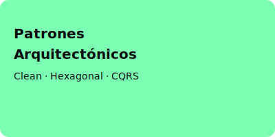

Patrones Arquitectónicos Modernos
Definición de patrón arquitectónico
Un patrón arquitectónico es una solución reutilizable a un problema común en el diseño de la arquitectura de software, proporcionando una estructura probada y buenas prácticas.
Patrón Clean Architecture
- Capas: Entidades, casos de uso, interfaces, frameworks.
- Propósito: Separar la lógica de negocio de los detalles de infraestructura, facilitando pruebas y mantenibilidad.
Arquitectura Hexagonal (Puertos y Adaptadores)
- Organiza el sistema en torno a un núcleo central (dominio) y adapta las entradas/salidas mediante puertos y adaptadores.
- Permite cambiar tecnologías externas sin afectar la lógica central.
Patrón CQRS (Command Query Responsibility Segregation)
- Separa las operaciones de lectura (queries) y escritura (commands) en modelos independientes.
- Mejora el rendimiento y la escalabilidad en sistemas complejos.
Ventajas y desventajas de cada patrón
| Patrón | Ventajas | Desventajas |
|---|---|---|
| Clean Architecture | Alta mantenibilidad, pruebas sencillas | Puede ser complejo de implementar |
| Hexagonal | Flexibilidad ante cambios tecnológicos | Curva de aprendizaje inicial |
| CQRS | Escalabilidad, optimización de consultas | Mayor complejidad y sincronización |
Ejemplos de aplicación en proyectos modernos
- Clean Architecture en aplicaciones empresariales con alta demanda de mantenibilidad.
- Hexagonal en sistemas que requieren integración con múltiples tecnologías externas.
- CQRS en plataformas de comercio electrónico con alto volumen de transacciones.
Conclusión general
Cada patrón arquitectónico moderno ofrece ventajas específicas según el contexto del proyecto. La elección adecuada depende de los requisitos de escalabilidad, mantenibilidad y complejidad del sistema.